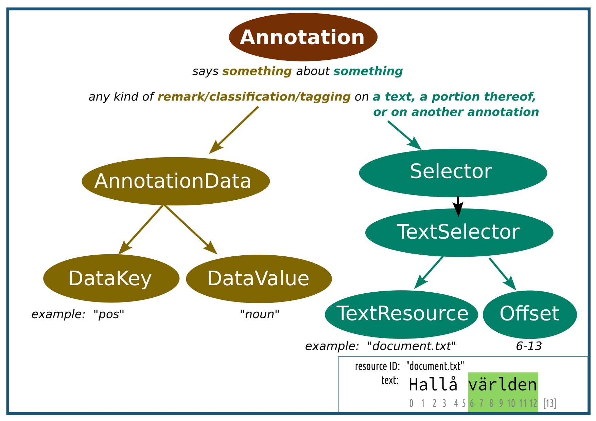
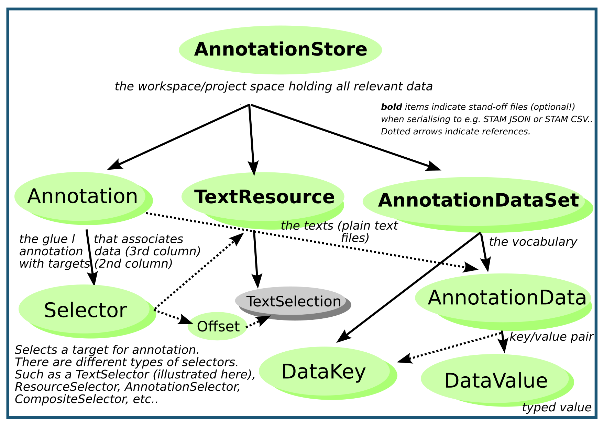
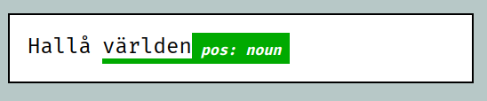
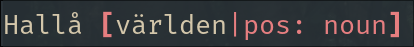
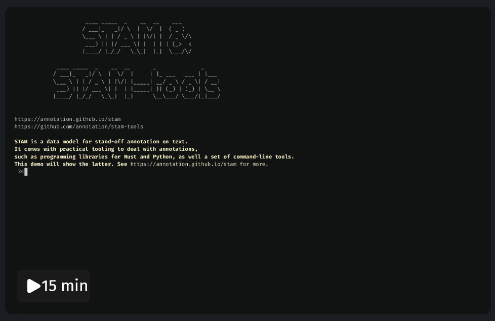

<!DOCTYPE html>
<html>
    <head>
        <meta charset="UTF-8" />
        <title>STAM: Stand-off Text Annotation Model</title>
        <meta property="og:title" content="STAM: Stand-off Text Annotation Model" />
        <meta property="og:description" content="STAM is a standalone data model for stand-off annotation on text. It allows you to describe annotations on text in your own terms and offers practical tooling to do so." />
        <meta property="description" content="STAM is a standalone data model for stand-off annotation on text. It allows you to describe annotations on text in your own terms and offers practical tooling to do so." />
        <meta property="og:image" content="https://annotation.github.io/stam/assets/preview.jpg" />
        <!-- Twitter is evil but people still use it unfortunately -->
        <meta property="twitter:title" content="STAM: Stand-off Text Annotation Model" />
        <meta property="twitter:description" content="STAM is a standalone data model for stand-off annotation on text. It allows you to describe annotations on text in your own terms and offers practical tooling to do so." />
        <meta property="twitter:image" content="https://annotation.github.io/stam/assets/preview.jpg" />
        <meta property="twitter:card" content="summary_large_image" />
        <meta property="keywords" content="text, stand-off annotation, natural language processing, annotations software" />
        <style type="text/css">

            body {
                margin: 0px;
                padding: 0px;
                font-family: Roboto, sans-serif;
                font-weight: 300;
            }
            div#navbar {
                margin: 0px;
                padding-top: 5px;
                padding-bottom: 5px;
                background: black;
                text-align: center;
            }
            div#navbar a, div#navbar a:visited {
                color: white;
                text-decoration: none;
                padding-left: 5px;
                padding-right: 5px;
            }
            div#navbar a:hover {
                color: #87cdde;
                text-decoration: underline;
            }
            div#cover {
                background-image: url(assets/cover.jpg);
                background-blend-mode: overlay;
                background-position: bottom;
                width: 100%;
                margin: 0px;
                padding-top: 5px;
                padding-bottom: 15px;
                text-align: center;
                background-color: #12212f;
            }
            div#logo {
                margin-left: auto;
                margin-right: auto;
                background: url(assets/logo.png);
                background-size: 240px 240px;
                width: 240px;
                height: 240px;
                filter: drop-shadow(20px 5px 5px black);
            }
            .huclogo {
                position: absolute;
                right: 0px;
                width: 120px;
                filter: invert();
            }
            .clariahlogo {
                position: absolute;
                top: 30px;
                left: 0px;
                width: 120px;
            }
            h1 {
                color: #87cdde;
                font-weight: 500;
                filter: drop-shadow(20px 5px 5px black);
            }
            div#footer {
                font-size: 75%;
                color: white;
                width: 100%;
                margin: 0px;
                background-color: #12212f;
                padding: 5px;
            }
            div#footer a {
                color: white;
            }
            section {
                width: 100%;
                margin: 0px;
                display: flex;
                flex-direction: row;
                justify-content: center;
            }
            section em {
                font-weight: 500;
                color: #752f03;
            }
            section.left {
                background: #cfc8c1;
                filter: drop-shadow(0px 5px 5px black);
            }
            section.left div.left {
                padding: 10px;
                flex-grow: 2;
                max-width: 820px;
            }
            div.left img, div.right img {
                width: 80%;
                max-width: 520px;
                height: auto;
            }

            section.left div.right {
                min-width: 320px;
                max-width: 520px;
                flex-grow: 1;
                text-align: center;
                padding: 5px;
            }
            section.right {
                background: white;
            }
            section.right div.left {
                min-width: 320px;
                max-width: 520px;
                flex-grow: 1;
                text-align: center;
                padding: 5px;
            }
            section.right div.right {
                padding: 10px;
                flex-grow: 2;
                max-width: 820px;
            }
            section h2 {
                color: #752f03;
                font-weight: 700;
            }
            a, a:visited {
                color: #12212f;
                font-weight: 500;
            }
            a:hover {
                background: #12212f;
                color: #87cdde;
            }
            a.img:hover {
                background: none;
            }
            pre {
                font-family: monospace;
                text-align: left;
                background: #333;
                display: block;
                color: white;
                padding: 10px;
                border-radius: 20px;
                overflow-x: scroll;
            }
            pre.inline {
                margin: 0px;
                display: inline-block;
                width: auto;
                overflow-x: auto;
                vertical-align: top;
                padding-top:2px;
                padding-bottom:2px;
            }
            pre strong {
                color: #c4845c;
                font-weight: bold;
            }
            pre em {
                color: #8dd35f;
            }

            /* roboto-300 - latin */
            @font-face {
              font-display: swap;
              font-family: 'Roboto';
              font-style: normal;
              font-weight: 300;
              src: url('assets/roboto-v30-latin-300.woff2') format('woff2'); /* Chrome 36+, Opera 23+, Firefox 39+, Safari 12+, iOS 10+ */
            }

            /* roboto-300italic - latin */
            @font-face {
              font-display: swap; /* Check https://developer.mozilla.org/en-US/docs/Web/CSS/@font-face/font-display for other options. */
              font-family: 'Roboto';
              font-style: italic;
              font-weight: 300;
              src: url('assets/roboto-v30-latin-300italic.woff2') format('woff2'); /* Chrome 36+, Opera 23+, Firefox 39+, Safari 12+, iOS 10+ */
            }

            /* roboto-regular - latin */
            @font-face {
              font-display: swap; /* Check https://developer.mozilla.org/en-US/docs/Web/CSS/@font-face/font-display for other options. */
              font-family: 'Roboto';
              font-style: normal;
              font-weight: 400;
              src: url('assets/roboto-v30-latin-regular.woff2') format('woff2'); /* Chrome 36+, Opera 23+, Firefox 39+, Safari 12+, iOS 10+ */
            }

            /* roboto-italic - latin */
            @font-face {
              font-display: swap; /* Check https://developer.mozilla.org/en-US/docs/Web/CSS/@font-face/font-display for other options. */
              font-family: 'Roboto';
              font-style: italic;
              font-weight: 400;
              src: url('assets/roboto-v30-latin-italic.woff2') format('woff2'); /* Chrome 36+, Opera 23+, Firefox 39+, Safari 12+, iOS 10+ */
            }

            /* roboto-500 - latin */
            @font-face {
              font-display: swap; /* Check https://developer.mozilla.org/en-US/docs/Web/CSS/@font-face/font-display for other options. */
              font-family: 'Roboto';
              font-style: normal;
              font-weight: 500;
              src: url('assets/roboto-v30-latin-500.woff2') format('woff2'); /* Chrome 36+, Opera 23+, Firefox 39+, Safari 12+, iOS 10+ */
            }

            /* roboto-500italic - latin */
            @font-face {
              font-display: swap; /* Check https://developer.mozilla.org/en-US/docs/Web/CSS/@font-face/font-display for other options. */
              font-family: 'Roboto';
              font-style: italic;
              font-weight: 500;
              src: url('assets/roboto-v30-latin-500italic.woff2') format('woff2'); /* Chrome 36+, Opera 23+, Firefox 39+, Safari 12+, iOS 10+ */
            }

            /* roboto-700 - latin */
            @font-face {
              font-display: swap; /* Check https://developer.mozilla.org/en-US/docs/Web/CSS/@font-face/font-display for other options. */
              font-family: 'Roboto';
              font-style: normal;
              font-weight: 700;
              src: url('assets/roboto-v30-latin-700.woff2') format('woff2'); /* Chrome 36+, Opera 23+, Firefox 39+, Safari 12+, iOS 10+ */
            }

            /* roboto-700italic - latin */
            @font-face {
              font-display: swap; /* Check https://developer.mozilla.org/en-US/docs/Web/CSS/@font-face/font-display for other options. */
              font-family: 'Roboto';
              font-style: italic;
              font-weight: 700;
              src: url('assets/roboto-v30-latin-700italic.woff2') format('woff2'); /* Chrome 36+, Opera 23+, Firefox 39+, Safari 12+, iOS 10+ */
            }

            @media print {
                #navbar {
                    display: none;
                }
                #cover {
                    border-radius: 25px;
                    background-image: none !important;
                    background-color: white !important;
                }
                #cover #logo, .huclogo, .clariahlogo {
                    display: none;
                }
                section {
                    flex-direction: column;
                    page-break-after: always; 
                }
                h1 {
                    color: #12212f !important;
                    filter: none;
                }
                section.left, section.right {
                    filter: none;
                }
                section div.left img, section div.right img {
                    width: 100%;
                    max-width: 100%;
                }
            }
        </style>
    </head>
</html>
<body>
    <div id="navbar">
        <nav>
            <a href="https://github.com/annotation/stam/blob/master/README.md">Specification</a> | 
            <a href="https://github.com/annotation/stam-rust">Rust Library</a> | 
            <a href="https://docs.rs/stam">Rust API Docs</a> | 
            <a href="https://github.com/annotation/stam-python">Python Library</a> | 
            <a href="https://stam-python.readthedocs.io">Python API Docs</a> | 
            <a href="https://github.com/annotation/stam-tools">STAM Tools</a>
        </nav>
    </div>
    <div id="cover">
        
        
        <h1>STAM: Stand-off Text Annotation Model</h1>
        <div id="logo">
        </div>
    </div>
    <section class="right">

    <div class="left">
        <a href="assets/modelintro.png" class="img">
            
        </a>
    </div>
    <div class="right">

        <h2>Data Model</h2>

        <p>
        STAM is a standalone data model for <em>stand-off annotation</em> on <em>text</em>. It
        allows you to describe annotations on text in your own terms. STAM <em>does not
        prescribe any vocabulary</em>.
        </p>

        <p>
        Texts are kept as-is (utf-8 plain text), devoid of any special markup, and annotations target text segments
        via character offsets. This approach can be called radical stand-off. Any further annotation 
        paradigm decisions are up to you. STAM aims to be <em>generic</em> and <em>flexible</em>.
        </p>

        <p>
        <em>Annotation</em> is the central notion in STAM; almost everything is an annotation,
        each has <em>annotation data</em> and <em>selects</em> a target. The data vocabulary 
        is all up to you; not even the notion of a word, token or sentence is predefined. Annotations can represent
        whatever you want; be it linguistic, structural, presentational, editorial or otherwise.
        </p>

        <p>
        STAM implementations offer you the means to <em>efficiently</em> encode your annotation model without data
        duplication.
        We then offer means to query and manipulate this data. We implement the boring core logic for things like coordinate
        mappings, import, export, validation, and computation of textual relations like overlap, so you no longer have to!
        </p>
        </div>

    </section>
    <section class="left">

    <div class="left">
        <h2>Practical Tooling</h2>

        <p>
        STAM comes with practical <em>programming libraries</em> and <em>tools</em> to work with
        annotations on text. These aim to be fairly low-level standalone software with
        <em>minimal dependencies</em>, high <em>reusability</em>, and not reliant on any wider
        infrastructure.
        </p>

        <ul>
        <li><a href="https://github.com/annotation/stam-rust">stam-rust</a> is the main library written in Rust with a focus on performance (<a href="https://docs.rs/stam">Rust API</a>).</li>
        <li><a href="https://github.com/annotation/stam-python">stam-python</a> is a Python library built on-top of the Rust library (<a href="https://stam-python.readthedocs.io/">Python API</a>).<br/> A <a href="https://nbviewer.org/github/annotation/stam-python/blob/master/tutorial.ipynb">tutorial "Standoff Text Annotation for Pythonistas"</a> is available as a jupyter notebook. <pre class="inline"><strong>$</strong> pip install stam</pre></li>
        <li><a href="https://github.com/annotation/stam-tools">stam-tools</a> is a set of command-line tools to work with STAM.
        <pre class="inline"><strong>$</strong> cargo install stam-tools</pre>
        </li>
        </ul>

        <p>
        All are available as free open-source software under the GNU General Public Licence v3.
        The tools are aimed at developers and technical researchers and data scientists. You can build upon STAM to construct your own applications that deal with annotation on text, including but not limited to
        for purposes such as natural language processing (NLP) and information retrieval.
        </p>
    </div>
    <div class="right">

<pre>
<strong>from</strong> stam <strong>import</strong> *
store = <strong>AnnotationStore(</strong>id=<em>"example"</em><strong>)</strong>
resource = store<strong>.add_resource(</strong>id=<em>"document.txt"</em>, text=<em>"Hallå världen"</em><strong>)</strong>
annotation = store<strong>.annotate(</strong>
   target=<strong>Selector.textselector(</strong>resource, <strong>Offset.simple(</strong><em>6</em>,<em>13</em><strong>))</strong>,
   data={<em>"key"</em>: <em>"pos"</em>, <em>"value"</em>: <em>"noun"</em>, <em>"set"</em>: <em>"testset"</em> } <strong>)</strong>

store<strong>.set_filename(</strong><em>"example.stam.store.json"</em><strong>)</strong>
store<strong>.save()</strong>

<strong>for</strong> annotation <strong>in</strong> store<strong>.annotations()</strong>:
    <strong>for</strong> data <strong>in</strong> annotation<strong>.data()</strong>:
        print(<em>f"{annotation}, {data.key()}={data.value()}"</em>)
</pre>
<pre>
<em>världen, pos=noun</em>
</pre>

        <p>
        Learn more? See the <a href="https://nbviewer.org/github/annotation/stam-python/blob/master/tutorial.ipynb">STAM Python Tutorial</a>!
        </p>

    </div>

    </section>
    <section class="right">

    <div class="left">
        <a href="assets/modelintro2.png" class="img">
            
        </a>
    </div>

    <div class="right">

        <h2>Formal specification &amp; extensibility</h2>

        <p>There is a core STAM model that is kept <em>minimal</em> yet <em>expressive</em>, and several
        optional <em>extensions</em> that define additional modelling capabilities you may or may
        not use.</p>

        <p>
        All are documented in a <a href="https://github.com/annotation/stam/blob/master/README.md">formal specification</a>, independent of any
        implementations.<p>

        <p>
        STAM aims to provide a <em>solid generic foundation</em> for stand-off-text annotation
        upon which other initiatives can build. The model is <em>specialised</em> for text annotation rather 
        than general knowledge graphs.
        </p>

    </div>
    </section>
    <section class="left">

    <div class="left">

        <h2>Simplicity, reusability &amp; interoperability</h2>

        <p>
        STAM provides a canonical <em>STAM JSON format</em> (shown right), and as an extension also a <em>STAM
        CSV format</em> and an optimised binary format. Data can also be easily imported 
        from and exported to simple ad-hoc formats like TSV. The model itself is independent of any serialisation formats.
        </p>

        <p>
        STAM may act as a pivot model in conversions between different annotation
        formats, paradigms and vocabularies. It does not seek to replace existing projects but 
        offers a common foundation in which other vocabularies may be expressed, allowing you to benefit from
        a common machinery.
        </p>

        <p>
        We seek a fair degree of interoperability with <a href="https://www.w3.org/TR/annotation-model/">W3C Web Annotations</a>
        , linked open data in general, <a href="https://proycon.github.io/folia">FoLiA</a>, 
        <a href="https://tei-c.org/">Text Encoding Initiative (TEI)</a>, <a href="https://universaldependencies.org/format.html">CoNLL-U</a> and <a href="https://github.com/annotation/text-fabric">Text Fabric</a>.
        Various converters and mappings to this end have been implemented, such as a W3C Web Annotation exporter (<a
        href="https://github.com/annotation/stam/tree/master/extensions/stam-webannotations">specification</a>), and a
        generic XML importer that effectively <em>untangles</em> an XML file with inline annotations/markup (like TEI) and splits it into 
        plain text and pure stand-off annotations referencing that text.
        </p>

    </div> <div class="right">
<pre>
<em><strong>{</strong>
  "@type": "<strong>AnnotationStore</strong>", "@id": "example",
  "resources": <strong>[</strong> <strong>{</strong> "@type": "<strong>TextResource</strong>", "@id": "document.txt", "text": "Hallå världen" <strong>}]</strong>,
  "annotationsets": <strong>[</strong> <strong>{</strong> "@type": "<strong>AnnotationDataSet</strong>", "@id": "testset", 
  "keys": <strong>[</strong> <strong>{</strong> "@type": "<strong>DataKey</strong>", "@id": "pos" <strong>}]</strong>,
  "data": <strong>[</strong> <strong>{</strong> "@type": "<strong>AnnotationData</strong>", "@id": "!D0", "key": "pos", "value": <strong>{</strong> "@type": "<strong>String</strong>", "value": "noun" <strong>} } ] } ]</strong>,
  "annotations": <strong>[</strong>
    <strong>{</strong>
      "@type": "Annotation", "@id": "!A0",
      "target": <strong>{</strong>
        "@type": "<strong>TextSelector</strong>",
        "resource": "document.txt",
        "offset": <strong>{</strong> "@type": "<strong>Offset</strong>", "begin": <strong>{</strong> "@type": "<strong>BeginAlignedCursor</strong>", "value": 6 <strong>}</strong>,
            "end": <strong>{</strong> "@type": "<strong>BeginAlignedCursor</strong>", "value": 13 <strong>}</strong> <strong>}</strong>
      <strong>}</strong>,
      "data": <strong>[</strong> <strong>{</strong> "@type": "<strong>AnnotationData</strong>", "@id": "!D0", "set": "testset" <strong>}</strong> <strong>]</strong>
    <strong>}</strong>
  <strong>]</strong>
<strong>}</strong></em>
</pre>
    </div>

    </section>
    <section class="right">

    <div class="left">
<pre>
<strong>$</strong> stam query --query \
  <em>'<strong>SELECT ANNOTATION</strong> ?a <strong>WHERE 
          DATA</strong> "testset" "pos" = "noun"<strong>;</strong>'</em> \
   example.stam.store.json
</pre>
<pre>
Type       Id  Text    TextSelection     testset/pos
<em>Annotation !A0 världen document.txt#6-13 noun</em>
</pre>


    </div>

    <div class="right">

        <h2>Querying &amp; Visualisation</h2>

        <p><a href="https://github.com/annotation/stam-tools">Tools</a> are also provided for querying and visualisation. A <a href="https://github.com/annotation/stam/tree/master/extensions/stam-query">STAM Query Language
        (STAMQL)</a> is available to that end. Visualisation works either in the browser (HTML) or in the terminal (ANSI text), and is 
        also exposed via <a href="https://github.com/annotation/stam-python">stam-python</a> for use in for example Jupyter Notebooks.
        </p>

<pre class="inline">
<strong>$</strong> stam view --query <em>'SELECT RESOURCE ?res'</em> \
  --query <em>'<strong>@KEYVALUETAG SELECT ANNOTATION</strong> ?a <strong>WHERE 
          RESOURCE</strong> ?res; 
          <strong>DATA</strong> "testset" "pos" = "noun"<strong>;</strong>'</em> \
   example.stam.store.json
</pre>

    
    


    </div>

    </section>

    <section class="left">

    <div class="left">

        <h2>Computing with Annotations</h2>

        <p>
        STAM, through its Rust and Python library and the command line tools, offers a lot of functionality for various <em>computations</em> on text and their annotations.

        <ul>
            <li>Conversion between character <em>offsets</em> in a relative frame (any text selection/annotation) and absolute frame (the full resource text), as well as 
                conversion between UTF-8 byte offsets and unicode characters offers.</li>
            <li>Computation of <em>spatial relationships</em> between text selections/annotations, e.g. embedding, overlap, adjacency, and retrieval of annotations bases on such relationships (also via STAMQL).</li>
            <li>Common regular-expression based text search (also via STAMQL).</li>
            <li>Automatic <em>alignment</em> of two or more similar texts (Smith-Waterman/Needleman-Wunsch) and automatic <a
                    href="https://github.com/annotation/stam/blob/master/extensions/stam-transpose/README.md">transposition</a> of annotations
                from one text to another, following such an alignment.</li>
            <li><a href="https://github.com/annotation/stam/tree/master/extensions/stam-textvalidation/README.md">Validation</a> of the integrity of stand-off annotations. Do they still point to the right text?</li>
        </ul>

        </p>

    </div>

    </section>
    <section class="right">
        <div class="left">
            <a href="assets/stam.webm"></a>
        </div>
        <div class="right">
            <h2>Demos, presentations &amp; Publications</h2>

            <ul>
                <li><a href="assets/stam.webm">This screencast video</a> (no audio) shows <strong>stam-tools</strong>, the command-line tools for STAM</li>
                <li><a href="https://nbviewer.org/github/annotation/stam-python/blob/master/tutorial.ipynb">Python tutorial "Standoff Text Annotation for Pythonistas"</a> is a tutorial for <strong>stam-python</strong> in the form of an interactive jupyter notebook.</li>
                <li><a href="https://raw.githubusercontent.com/annotation/stam/master/docs/poster.pdf">Poster</li>
            </ul>
        </div>
    </section>
    <div id="footer">
        
        <p>
        STAM is developed by <a href="https://proycon.anaproy.nl">Maarten van Gompel</a> at the <a href="https://huc.knaw.nl">KNAW Humanities Cluster</a>, <a href="https://di.huc.knaw.nl">Digital Infrastructure</a> department.<br/>
        All code is licensed under the GNU General Public Licence v3. This website under CC-BY-SA.
        </p>

        <p>
        STAM is developed in the scope of the <a href="https://clariah.nl">CLARIAH</a> project (NWO grant 184.034.023)<br />
        as part of the FAIR Annotation track of the Shared Development Roadmap, and CLARIAH WP3’s Standoff Text Annotation task.
        </p>
    </div>
</body>
</html>
